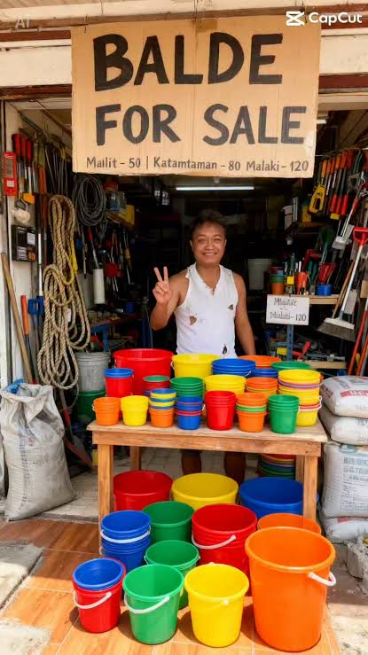
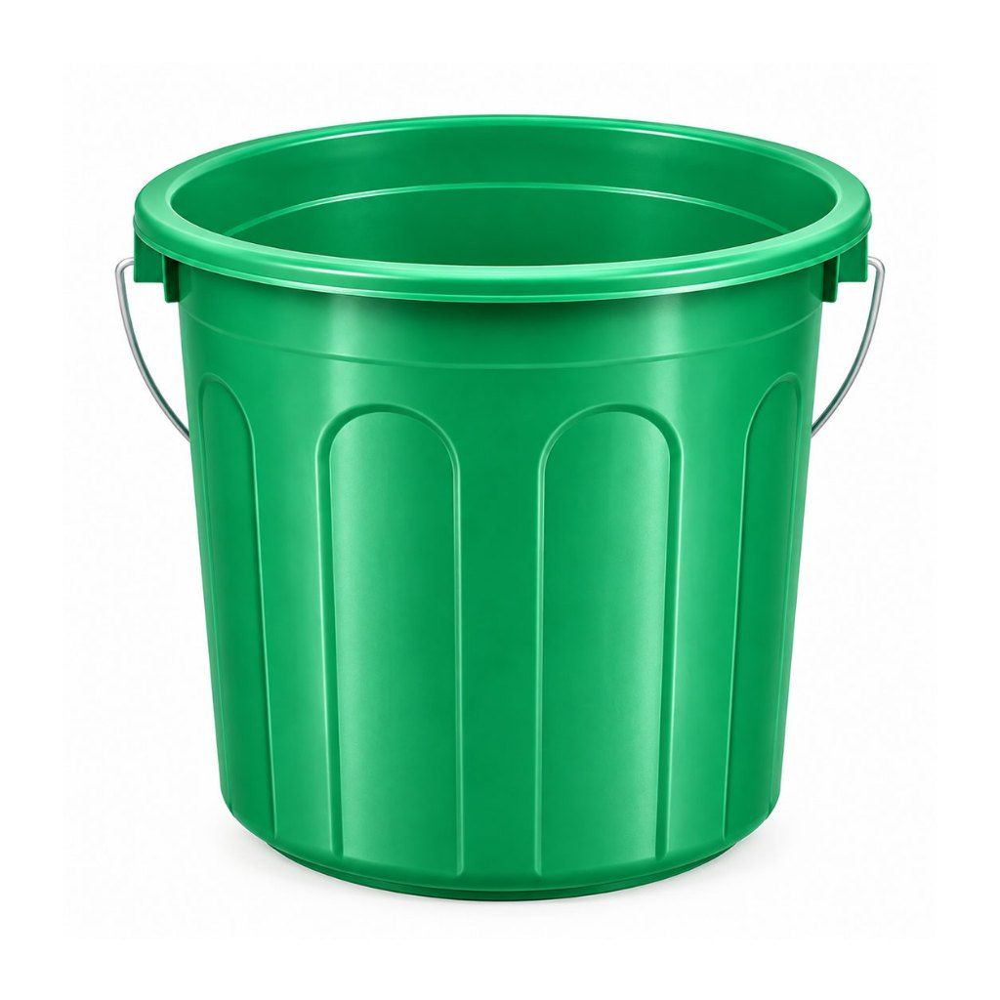

Balde — Biro o Problema?
Setyembre 23, 2026 — inanunsyo ng DOST-PAGASA (Department of Science and Technology – Philippine Atmospheric, Geophysical and Astronomical Services Administration) na ang kasalukuyang El Niño ay magiging isang Super El Niño simula Nobyembre 2026.
Nagdulot ito ng pangamba sa mga mamamayang Pilipino dahil sa panganib na mawalan ng sapat na tubig pang-inom, mataas na temperatura, at krisis sa agrikultura at pagkain.
"Collect, bumili na kayo ng balde para 'pag umulan, makolekta na ninyo lahat. Tuturuan namin kayo… we'll give you the filter. We'll teach you how to do everything para hindi kayo magkasakit at maayos ang pag-treat ng tubig."
Pahayag ni Pangulong Ferdinand Marcos Jr. tungkol dito
Ang "balde" comment ni Pangulong Marcos Jr. ay naging kontrobersyal matapos batikusin ng mga kritiko at netizens bilang isang mababaw o "band-aid solution" na nagpapasa ng responsibilidad sa mamamayan sa gitna ng malawakang krisis sa tubig dulot ng El Niño.
Marami ang pumuna sa kabalintunaan ng pagpapabili ng balde para mag-ipon ng ulan gayong tagtuyot ang kinakaharap ng bansa, na tinawag ng ilan na tila kakulangan sa kongkreto at malalaking plano ng pamahalaan.
Bilang tugon, dinala ng Palasyo ang usapin sa mas matinding diskurso nang bumanat si Palace Press Officer Claire Castro na kailangan ng mga kritiko ng "baldeng utak" upang maunawaan ang plano ng administrasyon.
Nanindigan ang Malacañang na ang rainwater harvesting ay isa lamang sa maraming paraan ng paghahanda, at nilinaw na hindi pinababayaan ang publiko dahil may kasama itong pamamahagi ng filtration kits mula sa DSWD upang gawing ligtas inumin ang makokolektang tubig, bukod pa sa iba pang pangmatagalang proyekto ng gobyerno.
Mga Sanggunian
"Press Release: Climate Advisory for "Very Strong" El Niño"
"Balde-baldeng problema"
"Palace: Marcos’ ‘buy buckets’ advice part of ‘serious’ El Niño preparations"


Balde Jokes
Bakit walang buhok yung timba?
Kasi bald e.
Anong tawag sa anak ni Mufasa na naging balde?
Edi Timba.
Ano sinabi ng balde nung hindi niya alam na groupings pala yung performance task?
"Team ba?"
gawa to ni lean